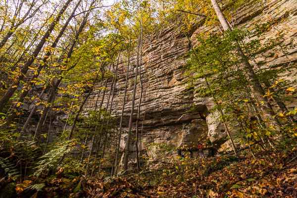

A couple months ago, on our way to Alaska, Adam and I agreed that it’d be cool for him to take off for about a week, right before we head to Hawaii. We’d rendezvous about a week later, with our parents, and the 4 of us would fly to Hawaii to knock out our last state that’s not part of the mainland/lower 48. That meant I’d have to find something to do by myself for about a week. We’d be near Kentucky and there’s some terrific (that’s an understatement) climbing there. I phoned a friend and set up a plan to climb there for about a week before flying to Hawaii.
As we came closer to Kentucky I caught wind via Facebook that a friend of mine from Florida was going to be climbing at the Red about the same time I’d be there. My climbing group just grew from 2 to 3, sweet!

Adam woke me up before the sun came up to drop him off at the Lexington airport. His plans had slightly changed and was flying to Florida to spend some time with our parents, some of his close friends, and Max, our dog. Once he was out, I headed to the Red to meet up with my friend, Kayla.
I got there and couldn’t find her anywhere. Without cell service, I couldn’t call. I asked some people staying at the campground/pizza shop and a couple people mentioned she had gone to this spot called Roadside Crag. I got some vague directions and went that way. Having never been there I couldn’t find it (Fun fact, it was directly across the street from where I parked. Go figure!). Instead I chose to catch up on some sleep and work on my computer in the basement of Miguel’s while I could still catch some of their weak wifi.
Later that evening I saw a familiar face, Kayla. She had met a small group and went climbing that day and as we were catching each other up with what’s happened in our lives over the past 9 months since we’d seen each other, the rest of her small crew trickled in.
Ryan’s from Texas and is a former project manager at Hewlett Packard. After quitting his job and renting his house out through a management company, has been traveling the world since March. That’s where he met Yong, in China. Yong works in action sports entertainment in China and is one of the strongest, and humblest, climbers I’ve ever met. Ryan met Yong at a climbing crag, they became friends, and when Yong asked Ryan where he should go to climb in the States, Ryan told him that the Red River Gorge in Kentucky is the place to go. Since Yong had been a great host, Ryan wanted to repay the hospitality and agreed to come with him to the States. Side note: Yong’s English is leaps and bounds better than my Mandarin, but there’s still a barrier. Then there was Jose, from the Netherlands. He’s a freelancer, like Adam and me, and heard about great climbing at the Red River Gorge. He went there alone and planned to be there for a month. That morning he was wandering around, looking for a climbing partner, saw Ryan sitting by himself at a picnic table, and asked if he was looking for a climbing partner. Ryan, being the guy he is, said, “No, but you’re more than welcome to join our group. We’re leaving in 30 minutes.”
Did you get all that? At this point our newly formed climbing crew in Kentucky is from Florida (2), Texas, China, and the Netherlands.
Remember that I mentioned I phoned a friend a couple months ago and was only planning to have a climbing party of 2? My friend Ashley, whom Adam and I first met in Texas and then met up with in Alaska while she was working there for the summer, rolled up later the next night after the rest of us had an amazing day climbing. I love climbing, I really do, but where I feel most at home is behind the lens of a camera. With a climbing crew the size of ours, all of which are strong climbers, I was able to dangle up in the air next to a route everyone else was working and get photos of everyone.
The next couple of days we bushwhacked to a trad crag that we never found, climbed a couple trad routes that we did find, climbed sport routes in more developed areas, and I was able to work on skills I’ve been wanting to acquire, like ascending, safely dangling from the side of a route to take photos, etc. I didn’t climb as much as I normally would have, but I didn’t care. I was capturing tons of photos every day, having a blast with new friends, and learning new skills that’ll serve me well in the long run; and at night we all swapped different travel stories.
All the while our climbing crew of 6 grew by 2 when Jose met Andrew on a rest day. Andrew’s a programmer from Massachusetts who talked his boss into letting him work remotely. And then his friend, Eddy, went through a bit of a life change and was on a road trip of his own. Then one night Ryan randomly ran into a friend of his from Texas who was there, Shawn.
At this point all of this probably sounds like some sort of drunk story, a group of climbers from Florida (2), Texas (2), China, Netherlands, Missouri, and Massachusetts (2), all coming together, just by saying “Hello,” asking if the other would like a reading light, asking if the other’s looking for a climbing partner, and asking if it’s cool to sit and cook some dinner together. Now we were all there together and having fun, climbing.
When I dropped Adam off at the airport, a slight chill ran up my spine. It wasn’t from cool autumn air. It was that my brother, whom I’ve visited 35 states, 3 Canadian Provinces, 1 US Territory, listened to the entire Harry Potter series, and spent 10 days on the Alaska Highway with was gone. I felt alone and unsure of what the next week would look like. But I think when we become unsure of what’s ahead is where our light shines through, if we let it. And in the end we realize it was exactly what we needed and we were right where we needed to be all along.
On a Tuesday morning I gave all my friends hugs as they went out to climb another day. Jose was taking a rest day and we shared some french toast before I hit the road for Nashville, where I flew out the next day to meet up with my partner in crime and parents to head to Hawaii.